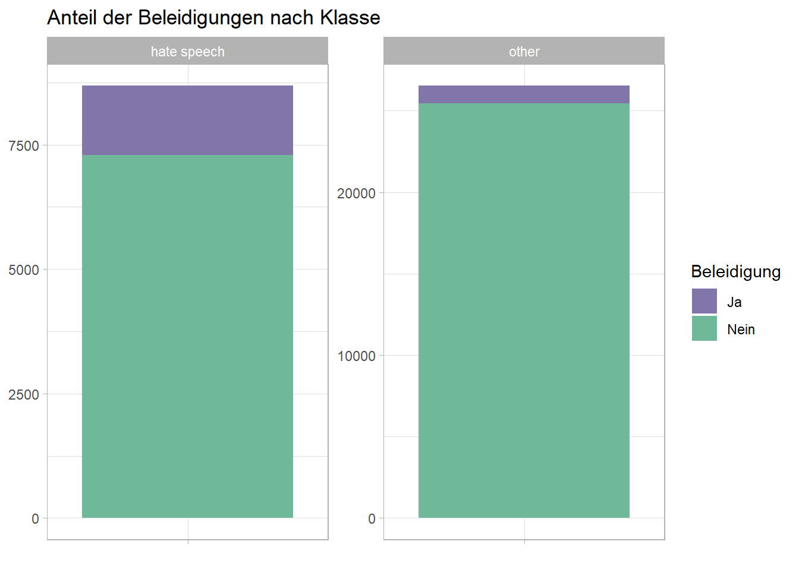

library(tidymodels)
library(textrecipes)
library(tokenizers)
library(tidyverse)
library(ggraph)
library(igraph)
library(tidytext)
library(syuzhet)
library(textdata)
library(ggthemes)
library(topicmodels)
library(tm)
library(stringr)
library(readr)
library(vip)Hate Speech auf Twitter
Textanalyse
Klassifikation
Huggingface
tidymodels
Klassifikation von Hate Speech
Einleitung
Ziel dieses Posts ist es, Hate Speech auf Twitter zu klassifizieren. Hass im Internet ist nach wie vor ein großes gesellschaftliches Problem, weshalb es sich lohnt, genauer zu untersuchen, was diesen Hass ausmacht und wie man ihn zuverlässig und automatisiert erkennen kann. Hierfür liegt ein Datensatz vor, der eine Auswahl englischer als Hate Speech oder nicht Hate Speech markierter Tweets enthält. Die Analyse dieser Daten lässt sich in zwei Teile gliedern: Zunächst werden Methoden der explorativen Datenanalyse angewandt, um Muster und Auffälligkeiten in den Tweets zu identifizieren. Anschließend werden die gewonnenen Erkenntnisse genutzt, um sowohl Shallow-Learning- als auch Deep-Learning-Algorithmen darauf zu trainieren, Tweets korrekterweise als Hate Speech einzuordnen.
Vorbereitung
Pakte laden
Datenimport
Bei den Daten handelt es sich um eine Auswahl englischer Tweets, die bereits auf Hate Speech untersucht wurden und sich daher gut für das Training von Modellen zur Erkennung von Hassrede eignen.
d_hate <- read_csv("d_hate.csv")Explorative Datenanalyse
Ziel ist es, auf Grundlage der Tweets einige nützliche Features zu generieren, die sich als Prädiktor für die AV (Hatespeech oder nicht) eignen. Hierfür müssen zunächst einige Charakteristika von Tweets, die als Hate Speech gelten, herausgearbeitet werden. Die Methoden und der Code orientieren sich stark an dem Vorgehen, das in Julia Silges und David Robinsons Buch “Text Mining with R” (https://www.tidytextmining.com/) beschrieben wird. Für die nachfolgenden Visualisierungen wird eine mit Hilfe der Seite https://davidmathlogic.com/colorblind eigens erstellte Farbpalette verwendet, die gewährleistet, dass keine Art der Farbenblindheit die Lesbarkeit der Diagramme beeinträchtigt.
Uriah_Flint <- c("#8175AA", "#6FB899", "#3AA2C3", "#8BD4F9", "#DDCC77", "#CC6677", "#882255")Vorverarbeitung
Um eine sinnvolle Analyse durchzuführen, müssen noch einige Datenvorverarbeitungsschritte durchlaufen werden. Diese beinhalten die Tokenisierung, das Entfernen von Stopwords und das Bereinigen der Tweets, die Links oder ähnliche Elemente enthalten.
d_hate_clean <- d_hate %>%
mutate(tweet = str_remove_all(tweet, pattern = 'RT\\s*|http[s]?://\\S+|\\d+'))
set.seed(123)
train_test_split <- initial_split(d_hate_clean, prop = .8, strata = class)
d_train <- training(train_test_split)
d_test <- testing(train_test_split)Tokenisierung
tweets_token <- d_train %>%
unnest_tokens(word, tweet)Entfernung der Stopwords
data(stopwords_en, package = "lsa")
stopwords_en <- tibble(word = stopwords_en)
tweets_token <- tweets_token %>%
anti_join(stopwords_en)Joining with `by = join_by(word)`Sentimentwerte
senti <- get_sentiments("afinn") %>%
mutate(neg_pos = case_when(value > 0 ~ "pos",
TRUE ~ "neg"))
tweets_senti <- tweets_token %>%
inner_join(senti)Joining with `by = join_by(word)`Anteil von Hate Speech
Um sich einen ersten Überblick über die Daten zu verschaffen, ist es sinnvoll, zunächst einmal den Anteil der als Hate Speech markierten Tweets zu überprüfen.
tweets_token %>%
summarise(`Anteil Hate Speech` = mean(class == "hate speech")) %>%
round(2)# A tibble: 1 × 1
`Anteil Hate Speech`
<dbl>
1 0.25class_totals <- tweets_token %>%
count(class, name = "class_total")
ggplot(class_totals, aes(x = "", y = class_total, fill = class)) +
geom_bar(stat = "identity") +
labs(title = "Anteil an Hate Speech",
x = NULL,
y = NULL,
fill = "Klasse") +
geom_text(aes(label = class_total), position = position_stack(vjust = 0.5)) +
theme_light() +
scale_fill_manual(values = Uriah_Flint)Der Anteil der Hate Speech in diesem Datensatz beträgt 25 Prozent. Die Tweets anderer Kategorien sind also deutlich in der Mehrheit.
Worthäufigkeiten
Einen weiteren interessanten Einblick gewähren die Worthäufigkeiten. Durch die Visualisierung der am meisten verwendeten Wörter und Wortpaare ist es bereits möglich, einen Einblick in das Vokabular zu erhalten und dieses unter den Klassen zu vergleichen.
tweets_count_senti <- tweets_senti %>%
group_by(class) %>%
count(class, word, sort = TRUE) %>%
slice_head(n = 10)
# Zusammenführen von "word_counts" und "class_totals" nach der Klasse
word_counts <- left_join(tweets_count_senti, class_totals, by = "class")
# Berechnung der gewichteten Häufigkeit
word_counts <- word_counts %>%
mutate(weighted_frequency = n / class_total)
# Visualisierung der gewichteten Häufigkeiten
ggplot(word_counts, aes(x = reorder(word, weighted_frequency), y = weighted_frequency, fill = class)) +
geom_bar(stat = "identity") +
facet_wrap(~class, scales = "free_y") +
coord_flip() +
labs(title = "Gewichtete Häufigkeiten der Wörter in Abhängigkeit von der Klasse",
x = "Wort",
y = "Gewichtete Häufigkeit") +
theme_light() +
scale_fill_manual(values = Uriah_Flint)Beim Vergleich der häufigsten Wörter fällt direkt auf, dass Beleidigungen und Schimpfwörter charakteristisch für Hate Speech sind, da die Liste der zehn häufigsten Wörter fast nur aus solchen Einträgen besteht. Das Vokabular der anderen Kategorie ist im Vergleich dazu überaus harmlos. Diese Harmlosigkeit wird durch das häufigste Wort “lol” noch auf die Spitze getrieben. Interessant ist jedoch auch, dass sich das Wort “hate” in dieser Liste wiederfindet. Hier wäre es interessant, im weiteren Verlauf der Analyse den Kontext in Erfahrung zu bringen. Auf der anderen Seite ist “hate” jedoch ein sehr gängiges Wort und dient zur Beschreibung normaler Gefühlszustände, ohne direkt Hass zu verbreiten.
tweets_bigram <-
d_train %>%
unnest_tokens(bigram, tweet, token = "ngrams", n = 2) %>%
filter(!is.na(bigram))
tweets_bigram <- tweets_bigram %>%
separate(bigram, c("word1", "word2"), sep = " ")%>%
filter(!word1 %in% stop_words$word) %>%
filter(!word2 %in% stop_words$word)
tweets_bigram %>%
unite(bigram, word1, word2, sep = " ") %>%
group_by(class) %>%
count(bigram, sort = TRUE) %>%
slice_max(n, n = 10) %>%
mutate(bigram = reorder(bigram, n)) %>%
ggplot(aes(n, bigram, fill = class) ) +
facet_wrap(~class, scales = "free_y") +
geom_col() +
labs(title = "Bigramme nach Häufigkeit",
x = "Häufigkeit",
y = "Bigramm") +
scale_fill_manual(values = Uriah_Flint) +
theme_light()Die Analyse der häufigsten Wortpaare deckt sich mit der Analyse der häufigsten Wörter. Sie bringt insofern neue Erkenntnisse, als deutlich wird, dass sich der Hass hauptsächlich gegen ethnische und sexuelle Minderheiten richtet. Dies wird anhand von Begriffen wie “white trash” und “fucking faggot” deutlich. Bemerkenswert ist ebenfalls, dass es sich keinesfalls hauptsächlich um Hass gegen Schwarze handelt, sondern genauso auch Menschen mit heller Hautfarbe ethnisch beleidigt werden.
Wortbeziehungen
Im Folgenden werden alle Wortpaare, die häufiger als sechs Mal vorkommen, visualisiert. Hierdurch werden die Kontexte der Wörter deutlicher und die Beziehungen können uns Aufschluss darüber geben, in welchem Zusammenhang “hate” verwendet wird.
tweets_bigram_count <- tweets_bigram %>%
count(word1, word2, sort = TRUE)
visualize_bigrams <- function(bigrams) {
set.seed(2016)
a <- grid::arrow(type = "closed", length = unit(.15, "inches"))
bigrams %>%
graph_from_data_frame() %>%
ggraph(layout = "fr") +
geom_edge_link(aes(edge_alpha = n), show.legend = FALSE, arrow = a) +
geom_node_point(color = "#6FB899", size = 5) +
geom_node_text(aes(label = name), vjust = 1, hjust = 1) +
theme_void()
}
tweets_bigram_count %>%
filter(n > 6,
!str_detect(word1, "\\d"),
!str_detect(word2, "\\d")) %>%
visualize_bigrams()Warning: Using the `size` aesthetic in this geom was deprecated in ggplot2 3.4.0.
ℹ Please use `linewidth` in the `default_aes` field and elsewhere instead.Zum Kontext des Wortes “hate” erhalten wir hier keine neuen Hinweise. Jedoch wird klar ersichtlich, in welchen Kombinationen Schimpfwörter verwendet werden. Außerdem werden Ambiguitäten deutlich, da Wörter wie “trash” und “colored” sowohl als rassistische Beleidigung als auch als Beschreibung von Alltagsgegenständen auftauchen.
Sentimentanalyse
Zweck der Sentimentanalyse ist es, herauszufinden, ob die Sentimentausprägungen die beiden Klassen klar voneinander abgrenzen.
# Zählen der negativen und positiven Sentimente
tweets_senti2 <- tweets_senti %>%
group_by(class) %>%
count(neg_pos, name = "count")
# Visualisierung der Sentimentantanteile nach Klasse
ggplot(tweets_senti2, aes(x = "", y = count, fill = neg_pos)) +
geom_bar(stat = "identity") +
labs(title = "Sentimentanteile nach Klasse",
x = NULL,
y = NULL,
fill = "Sentiment") +
facet_wrap(~ class) +
geom_text(aes(label = count), position = position_stack(vjust = 0.5)) +
theme_light() +
scale_fill_manual(values = Uriah_Flint)In obigem Diagramm wird ersichtlich, dass hasslastige Tweets überwiegend negativ sind, während sich die Sentimente der anderen Klasse in der Waage halten. Das Sentiment ist also ein entscheidender Faktor bei der Klassifizierung von Hate Speech und sollte beim Training des Modells berücksichtigt werden.
Themenanalyse
Die Themenanalyse soll Aufschluss darüber geben, ob es bestimmte Themengebiete gibt, die charakteristisch für Hate Speech sind.
tweets_token_counts_hate <- tweets_token %>%
filter(class == "hate speech") %>%
count(word, sort = TRUE) %>%
filter(n > 19) %>%
select(word)
tweets_dtm_hate <- DocumentTermMatrix(tweets_token_counts_hate)
tweets_dtm_hatetweets_lda_hate <- LDA(tweets_dtm_hate, k = 4, control = list(seed = 42))
tweets_themen_hate <- tidy(tweets_lda_hate, matrix = "beta")
tweets_themen_hate <- tweets_themen_hate %>%
group_by(topic) %>%
slice_max(beta, n = 7) %>%
ungroup() %>%
arrange(topic, -beta)
tweets_themen_hate %>%
mutate(term = reorder_within(term, beta, topic)) %>%
ggplot(aes(beta, term, fill = factor(topic))) +
geom_col(show.legend = FALSE) +
facet_wrap(~ topic, scales = "free") +
scale_y_reordered() +
labs(title = "Themen von Hate Speech") +
theme_minimal() +
scale_fill_manual(values = Uriah_Flint)Obwohl sich die Themen nicht eindeutig voneinander abgrenzen, sind dennoch schwache Muster erkennbar. Thema Eins scheint sich vor allem aus allgemeinen Obszönitäten zusammenzusetzen, während das zweite Thema aus Beleidigungen gegen Schwule und Schwarze und etwas härteren Wörtern wie “kill” und “shit” besteht. In Thema Drei und Vier treten Beleidigungen gegen Frauen sowie die LGBTQ-Community in den Vordergrund. Viel wichtiger als diese kleinen Unterschiede ist jedoch das große Bild der Themen, welches wie schon bei der Analyse der Worthäufigkeiten festgestellt, hauptsächlich aus ethnischen und sexuellen Beleidigungen und Schimpfwörtern besteht.
Schimpfwörter
Schimpfwörter scheinen eine große Rolle bei Hate Speech zu spielen. Deshalb erachte ich es als sinnvoll, Schimpfwörter als Feature in das spätere Rezept mit aufzunehmen. Hierzu verwende ich diese Liste, welche ich um ein paar Einträge (rassistische Beleidigungen) ergänzt habe: https://www.insult.wiki/list-of-insults.
insults <- read.csv("insults.csv")
tweets_token %>%
group_by(class) %>%
count(word, sort = TRUE) %>%
left_join(insults, by = "word") %>%
mutate(insult = case_when(is.na(value) == TRUE ~ "Nein",
TRUE ~ "Ja")) %>%
select(-value) %>%
ggplot(aes(x = "", y = n, fill = insult)) +
geom_bar(stat = "identity") +
labs(title = "Anteil der Beleidigungen nach Klasse",
x = NULL,
y = NULL,
fill = "Beleidigung") +
facet_wrap(~ class, scales = "free_y") +
theme_light() +
scale_fill_manual(values = Uriah_Flint)
Tatsächlich ist der Anteil der Beleidigungen in Hate Speech Tweets höher, jedoch fällt er deutlich geringer aus als erwartet.
Emojis
Die Überlegung, dass Hate Speech feindselige Emojis enthält, ist sehr plausibel. Um aggressive Emojis zu kennzeichnen, verwende ich ein von mir erstelltes Lexikon, das solche Emojis enthält und schreibe eine Funktion, die zählt, wieviele feindselige Emojis in einem Tweet vorkommen. Der Totenkopf ist nicht in der Liste der feindseligen Emojis enthalten, da dieser hauptsächlich als Synonym oder Steigerung des Lach-Emojis verwendet wird (engl.: “That’s too funny. I’m dead!”).
hostile_emojis <- read.csv("hostile_emojis.csv")count_hostile_emojis <- function(text) {
# Initialisiere einen leeren Vektor für die Zählungen
counts <- numeric(length(hostile_emojis$emoji))
# Iteriere über jedes Emoji und zähle die Übereinstimmungen im Text
for (i in seq_along(hostile_emojis$emoji)) {
counts[i] <- sum(lengths(str_extract_all(text, hostile_emojis$emoji[i])))
}
# Summiere die Gesamtanzahl der Übereinstimmungen
total_count <- sum(counts)
return(total_count)
}
dummy <- c("🗑", "bogen", "😠", "👹", "💩", "baby", "und", "🆗")
count_hostile_emojis(dummy)[1] 3d_train %>%
mutate(hostile_emojis_n = map_int(tweet, count_hostile_emojis)) %>%
summarise(`Feindselige Emojis` = mean(hostile_emojis_n == 1))# A tibble: 1 × 1
`Feindselige Emojis`
<dbl>
1 0Die Vermutung, dass Hate Speech feindselige Emojis enthält, stellt sich in diesem Fall als falsch heraus. Da es keinen einzigen Emoji dieser Art gibt, wird dieser Ansatz für die Modellierung verworfen.
Modellierung
In der Modellierung ist es nun das Ziel, einen Algorithmus darauf zu trainieren, möglichst präzise Hate Speech vorherzusagen. Der Algorithmus meiner Wahl ist der XGBoost. Zunächst werden jedoch noch Rezepte formuliert, die die Erkenntnisse aus der Analyse nun in nützliche Features umwandeln.
Rezepte definieren
Rezept Eins enthält Schimpfwörter, Sentimentwerte und die Themenanalyse. Außerdem werden noch die üblichen Textverarbeitungsschritte durchgeführt sowie ein Tokenfilter angewandt.
rec1 <-
recipe(class ~ ., data = d_train) %>%
step_text_normalization(tweet) %>%
step_mutate(insult = get_sentiment(tweet,
method = "custom",
lexicon = insults)) %>%
step_mutate(senti = get_sentiment(tweet)) %>%
step_tokenize(tweet, token = "words") %>%
step_tokenfilter(tweet, max_tokens = 1e2) %>%
step_stopwords(tweet, language = "en", stopword_source = "snowball") %>%
step_stem() %>%
step_lda(tweet, num_topics = 6)Rezept Zwei enthält statt der Themenanalyse die Tf-idf-Maße.
rec2 <-
recipe(class ~ ., data = d_train) %>%
update_role(id, new_role = "id") %>%
step_text_normalization(tweet) %>%
step_mutate(insult = get_sentiment(tweet,
method = "custom",
lexicon = insults)) %>%
step_mutate(senti = get_sentiment(tweet)) %>%
step_tokenize(tweet, token = "words") %>%
step_tokenfilter(tweet, max_tokens = 1e2) %>%
step_stopwords(tweet, language = "en", stopword_source = "snowball") %>%
step_stem() %>%
step_tfidf(tweet)baked <- rec1 %>%
prep() %>%
bake(new_data = NULL)
baked# A tibble: 4,474 × 10
id class insult senti lda_tweet_1 lda_tweet_2 lda_tweet_3 lda_tweet_4
<dbl> <fct> <int> <dbl> <dbl> <dbl> <dbl> <dbl>
1 85 hate spee… 1 -0.25 0 0 0 0
2 90 hate spee… 1 1 0.1 0.3 0 0.6
3 186 hate spee… 1 -1 0.433 0.4 0 0.1
4 204 hate spee… 1 -0.75 0 0 0.3 0.2
5 206 hate spee… 2 -0.75 0 0.3 0.5 0
6 221 hate spee… 0 1.4 0 0 0 0.2
7 263 hate spee… 1 -1.75 0 0 0.1 0.4
8 317 hate spee… 1 -0.55 0 0 0.5 0
9 320 hate spee… 0 -0.35 0.1 0.1 0 0.2
10 354 hate spee… 1 -0.75 0.25 0.15 0.05 0.5
# ℹ 4,464 more rows
# ℹ 2 more variables: lda_tweet_5 <dbl>, lda_tweet_6 <dbl>baked2 <- rec2 %>%
prep() %>%
bake(new_data = NULL)
baked2# A tibble: 4,474 × 44
id class insult senti tfidf_tweet_amp tfidf_tweet_ass tfidf_tweet_back
<dbl> <fct> <int> <dbl> <dbl> <dbl> <dbl>
1 85 hate spe… 1 -0.25 0 0 0
2 90 hate spe… 1 1 0 0 0
3 186 hate spe… 1 -1 0 0 0
4 204 hate spe… 1 -0.75 0 0 0
5 206 hate spe… 2 -0.75 0 0 0
6 221 hate spe… 0 1.4 0 0 0
7 263 hate spe… 1 -1.75 0 0 0
8 317 hate spe… 1 -0.55 0 0 0
9 320 hate spe… 0 -0.35 0 0 0
10 354 hate spe… 1 -0.75 0 0 0
# ℹ 4,464 more rows
# ℹ 37 more variables: tfidf_tweet_bird <dbl>, tfidf_tweet_birds <dbl>,
# tfidf_tweet_bitch <dbl>, tfidf_tweet_can <dbl>, tfidf_tweet_charlie <dbl>,
# tfidf_tweet_colored <dbl>, tfidf_tweet_day <dbl>, tfidf_tweet_faggot <dbl>,
# tfidf_tweet_fuck <dbl>, tfidf_tweet_get <dbl>, tfidf_tweet_ghetto <dbl>,
# tfidf_tweet_go <dbl>, tfidf_tweet_good <dbl>, tfidf_tweet_got <dbl>,
# tfidf_tweet_hate <dbl>, tfidf_tweet_just <dbl>, tfidf_tweet_know <dbl>, …Modelle definieren
xgb <-
boost_tree(
mtry = tune(),
trees = tune(),
tree_depth = tune(),
learn_rate = tune(),
min_n = tune(),
loss_reduction = tune()
) %>%
set_engine("xgboost") %>%
set_mode("classification") %>%
translate()Workflowset erstellen
Das Modell wird getuned. Hierfür wird zweifache Kreuzvalidierung mit einer Wiederholung verwendet. Der geringe Performance-Zuwachs durch intensiveres Tuning mit mehr Folds und Wiederholungen würde in diesem Fall nicht die höhere Rechenzeit rechtfertigen.
preproc <- list(rec1 = rec1, rec2 = rec2)
models <- list(xgb = xgb)
all_workflows <- workflow_set(preproc, models)
model_set <-
all_workflows %>%
workflow_map(
resamples = vfold_cv(d_train,
v = 2,
repeats = 1,
strata = class),
grid = 7,
seed = 42,
verbose = TRUE,
control = control_resamples(save_pred = TRUE))i 1 of 2 tuning: rec1_xgbi Creating pre-processing data to finalize unknown parameter: mtryWarning: package 'stopwords' was built under R version 4.2.3Warning: package 'SnowballC' was built under R version 4.2.3Warning: package 'xgboost' was built under R version 4.2.3✔ 1 of 2 tuning: rec1_xgb (1m 13.7s)i 2 of 2 tuning: rec2_xgbi Creating pre-processing data to finalize unknown parameter: mtry✔ 2 of 2 tuning: rec2_xgb (1m 25s)Ergebnisse
tune::autoplot(model_set) +
theme(legend.position = "bottom")model_set %>%
collect_metrics() %>%
arrange(-mean)# A tibble: 28 × 9
wflow_id .config preproc model .metric .estimator mean n std_err
<chr> <chr> <chr> <chr> <chr> <chr> <dbl> <int> <dbl>
1 rec2_xgb Preprocessor1_… recipe boos… roc_auc binary 0.904 2 0.00857
2 rec2_xgb Preprocessor1_… recipe boos… roc_auc binary 0.881 2 0.0115
3 rec2_xgb Preprocessor1_… recipe boos… accura… binary 0.880 2 0.00246
4 rec2_xgb Preprocessor1_… recipe boos… roc_auc binary 0.868 2 0.0196
5 rec2_xgb Preprocessor1_… recipe boos… accura… binary 0.866 2 0.00112
6 rec2_xgb Preprocessor1_… recipe boos… accura… binary 0.855 2 0.00983
7 rec2_xgb Preprocessor1_… recipe boos… roc_auc binary 0.854 2 0.0115
8 rec2_xgb Preprocessor1_… recipe boos… roc_auc binary 0.853 2 0.0140
9 rec2_xgb Preprocessor1_… recipe boos… roc_auc binary 0.852 2 0.0167
10 rec2_xgb Preprocessor1_… recipe boos… accura… binary 0.848 2 0.00201
# ℹ 18 more rowsRezept Zwei hat besser abgeschnitten als Rezept Eins. Wählen wir nun das beste Modell aus und fitten es:
Finalisieren
best_model_params <-
extract_workflow_set_result(model_set, "rec2_xgb") %>%
select_best()Warning: No value of `metric` was given; metric 'roc_auc' will be used.best_wf <-
all_workflows %>%
extract_workflow("rec2_xgb")
best_wf_finalized <-
best_wf %>%
finalize_workflow(best_model_params)
fit_final <- fit(best_wf_finalized, data = d_train)fit_final %>%
extract_fit_parsnip() %>%
vip()Die Analyse der wichtigsten Prädiktoren deckt sich mit den Erkenntnissen aus der EDA. Die mit Abstand wichtigsten Features sind die Beleidigungen und Sentimentwerte, während die Tf-idf-Maße von Beleidigungen ebenfalls viel zur Prediction beitragen.
wf_preds <-
collect_predictions(model_set)
wf_preds %>%
group_by(wflow_id) %>%
roc_curve(truth = class, `.pred_hate speech`) %>%
autoplot()
Die Performance im Train-Sample fällt sehr gut aus, da die Vorhersagen mit einer Genauigkeit von rund 90 Prozent sehr präzise sind.
Vorhersagen
preds <- predict(fit_final, d_test)
preds# A tibble: 1,119 × 1
.pred_class
<fct>
1 other
2 other
3 hate speech
4 other
5 hate speech
6 other
7 other
8 other
9 other
10 other
# ℹ 1,109 more rowsBestimmen der Vorhersagegüte im Test-Sample
d_test1 <-
d_test %>%
bind_cols(preds) %>%
mutate(class = as.factor(class))
d_test1# A tibble: 1,119 × 4
id tweet class .pred_class
<dbl> <chr> <fct> <fct>
1 66 "\"@AllAboutManFeet: woof woof and hot soles" other other
2 70 "\"@ArizonasFinest: Why the eggplant emoji doe?\"y h… other other
3 111 "\"@DevilGrimz: @VigxRArts you're fucking gay, black… hate… hate speech
4 116 "\"@DomWorldPeace: Baseball season for the win. #Yan… other other
5 151 "\"@JReebo: Who wants to get there nose in these bad… other hate speech
6 192 "\"@Mesha_nojas: @_Vontethekidd &#;&#;&#;&#;&#;\" I … other other
7 245 "\"@Stephenwildboy: Chilling &#;&#; sexy scally lad" other other
8 251 "\"@TEE_JONEZ: @KingCuh @stanleys I'm not mad cuh ha… other other
9 318 "\"@ayyee_ceee_: One mans trash &#; is another mans … other other
10 341 "\"@hxhassan: Jihadi patron Hajjaj al-Ajmi is arrest… other other
# ℹ 1,109 more rowsmy_metrics <- metric_set(accuracy, f_meas)
my_metrics(d_test1,
truth = class,
estimate = .pred_class)# A tibble: 2 × 3
.metric .estimator .estimate
<chr> <chr> <dbl>
1 accuracy binary 0.883
2 f_meas binary 0.744Auch im Test-Sample bewährt sich das Modell mit einer sehr hohen Genauigkeit.
Klassifikation mit Transformer
Ein weiterer Ansatz zur Klassifikation von Hate Speech ist es, kein eigenes Modell zu trainieren, sondern Zero-Shot-Learning anzuwenden. Das ergibt natürlich am meisten Sinn mit einem sehr fortgeschrittenen und komplexen Transformer-Modell, das bereits auf die Erkennung von Hate Speech trainiert wurde. Im Folgenden wird daher das Modell roberta-hate-speech-dynabench-r4-target von Facebook, welches auf Huggingface.co verfügbar ist, um die Tweets nach Hate Speech zu klassifizieren. Hierzu wird der Befehl pipeline aus der transformers-Library von Huggingface genutzt, um das Modell zu laden und auf das Test-Sample anzuwenden.
library(reticulate)Warning: package 'reticulate' was built under R version 4.2.3use_virtualenv("C:/Users/rapha/venv")from transformers import pipelineimport tensorflow as tfclassifier = pipeline("text-classification", model="facebook/roberta-hate-speech-dynabench-r4-target")WARNING:tensorflow:From C:\Users\rapha\venv\Lib\site-packages\keras\src\backend.py:873: The name tf.get_default_graph is deprecated. Please use tf.compat.v1.get_default_graph instead.
Some weights of the PyTorch model were not used when initializing the TF 2.0 model TFRobertaForSequenceClassification: ['roberta.embeddings.position_ids']
- This IS expected if you are initializing TFRobertaForSequenceClassification from a PyTorch model trained on another task or with another architecture (e.g. initializing a TFBertForSequenceClassification model from a BertForPreTraining model).
- This IS NOT expected if you are initializing TFRobertaForSequenceClassification from a PyTorch model that you expect to be exactly identical (e.g. initializing a TFBertForSequenceClassification model from a BertForSequenceClassification model).
All the weights of TFRobertaForSequenceClassification were initialized from the PyTorch model.
If your task is similar to the task the model of the checkpoint was trained on, you can already use TFRobertaForSequenceClassification for predictions without further training.tweets <- d_test$tweettweets = r.tweets
results = classifier(tweets)result <- py$results
labels <- lapply(result, function(element) element$label)
tweets_hate <- cbind(d_test, pred = unlist(labels))
tweets_hate <- tweets_hate %>%
mutate(class = as.factor(class),
pred = case_when(pred == "hate" ~ "hate speech",
pred == "nothate" ~ "other"),
pred = as.factor(pred))my_metrics2 <- metric_set(accuracy, f_meas)
my_metrics2(tweets_hate,
truth = class,
estimate = pred)# A tibble: 2 × 3
.metric .estimator .estimate
<chr> <chr> <dbl>
1 accuracy binary 0.882
2 f_meas binary 0.797Die Performance des Modells ist objektiv gesehen gut, verglichen mit dem XGBoost mit einer Minute Trainingszeit fällt sie jedoch mager aus.
Neuronales Netzwerk
Bisher wurde Hate Speech sowohl mit Hilfe eines auf den konkreten Daten trainierten Shallow-Learner als auch mit Hilfe eines vortrainierten Transformers klassifiziert. Im letzten Schritt dieses Posts sollen die Stärken dieser beiden Ansätze kombiniert werden, indem ein Deep-Learning-Algorithums, genauer gesagt ein Neuronales Netzwerk, auf den vorliegenden Daten trainiert wird. Das neuronale Netz verwendet ein vortrainiertes Wort-Einbettungsmodell mit 50 Dimensionen, das für die deutsche Sprache optimiert ist. Dieses Embedding-Modell ermöglicht es dem Netzwerk, semantische Repräsentationen der Wörter zu erlernen. Das Netzwerk besteht aus einer Eingabeschicht, die das Embedding-Modell enthält, gefolgt von einer vollständig verbundenen Schicht mit 32 Neuronen und einer Sigmoid-Aktivierungsfunktion. Weiterhin gibt es eine Schicht mit 24 Neuronen und einer ReLU-Aktivierung. Die Ausgabeschicht besteht aus einem einzelnen Neuron für binäre Klassifikation. Das Netzwerk wird mit dem Adam-Optimizer kompiliert und die binäre Kreuzentropie wird als Verlustfunktion verwendet. Die Accuracy wird als Metrik überwacht. Das Training erfolgt über 3 Epochen mit einer Batch-Größe von 48, wobei die Validierung anhand des Test-Samples durchgeführt wird.
import pandas as pd
import numpy as np
import tensorflow_hub as hub
from tensorflow.keras.models import Sequential
from tensorflow.keras.layers import Dense
from sklearn.metrics import accuracy_score
from sklearn.model_selection import GridSearchCV
from sklearn.metrics import make_scorerd_train = r.d_train
d_test = r.d_test
X_train = d_train["tweet"].values
X_test = d_test["tweet"].valuesd_train["y"] = d_train["class"].map({"other" : 0, "hate speech" : 1})
y_train = d_train.loc[:, "y"].values
d_test["y"] = d_test["class"].map({"other" : 0, "hate speech" : 1})
y_test = d_test.loc[:, "y"].valuesembedding = "https://tfhub.dev/google/nnlm-de-dim50/2"
hub_layer = hub.KerasLayer(embedding, input_shape=[],
dtype=tf.string, trainable=True)tf.random.set_seed(42)model = tf.keras.Sequential()
model.add(hub_layer)
model.add(tf.keras.layers.Dense(32, activation='sigmoid'))
model.add(tf.keras.layers.Dense(24, activation='relu'))
model.add(tf.keras.layers.Dense(1))model.compile(optimizer='adam',
loss=tf.keras.losses.BinaryCrossentropy(from_logits=True),
metrics=['accuracy'])WARNING:tensorflow:From C:\Users\rapha\venv\Lib\site-packages\keras\src\optimizers\__init__.py:309: The name tf.train.Optimizer is deprecated. Please use tf.compat.v1.train.Optimizer instead.
WARNING:tensorflow:From C:\Users\rapha\venv\Lib\site-packages\keras\src\optimizers\__init__.py:309: The name tf.train.Optimizer is deprecated. Please use tf.compat.v1.train.Optimizer instead.model.fit(X_train, y_train,
epochs=3,
batch_size=48,
validation_data=(X_test, y_test),
verbose = 1)Epoch 1/3
1/94 [..............................] - ETA: 3:06 - loss: 0.6014 - accuracy: 0.7500
2/94 [..............................] - ETA: 1:45 - loss: 0.5919 - accuracy: 0.7604
3/94 [..............................] - ETA: 1:05 - loss: 0.5953 - accuracy: 0.7500
4/94 [>.............................] - ETA: 51s - loss: 0.6090 - accuracy: 0.7240
5/94 [>.............................] - ETA: 46s - loss: 0.6009 - accuracy: 0.7333
6/94 [>.............................] - ETA: 42s - loss: 0.5789 - accuracy: 0.7604
7/94 [=>............................] - ETA: 38s - loss: 0.5799 - accuracy: 0.7560
8/94 [=>............................] - ETA: 37s - loss: 0.5771 - accuracy: 0.7578
9/94 [=>............................] - ETA: 35s - loss: 0.5706 - accuracy: 0.7639
10/94 [==>...........................] - ETA: 33s - loss: 0.5739 - accuracy: 0.7583
11/94 [==>...........................] - ETA: 31s - loss: 0.5629 - accuracy: 0.7689
12/94 [==>...........................] - ETA: 30s - loss: 0.5633 - accuracy: 0.7674
13/94 [===>..........................] - ETA: 29s - loss: 0.5618 - accuracy: 0.7676
14/94 [===>..........................] - ETA: 28s - loss: 0.5620 - accuracy: 0.7664
15/94 [===>..........................] - ETA: 27s - loss: 0.5646 - accuracy: 0.7625
16/94 [====>.........................] - ETA: 26s - loss: 0.5658 - accuracy: 0.7604
17/94 [====>.........................] - ETA: 25s - loss: 0.5680 - accuracy: 0.7574
18/94 [====>.........................] - ETA: 24s - loss: 0.5713 - accuracy: 0.7535
19/94 [=====>........................] - ETA: 24s - loss: 0.5768 - accuracy: 0.7478
20/94 [=====>........................] - ETA: 23s - loss: 0.5782 - accuracy: 0.7458
21/94 [=====>........................] - ETA: 23s - loss: 0.5752 - accuracy: 0.7480
22/94 [======>.......................] - ETA: 22s - loss: 0.5745 - accuracy: 0.7481
23/94 [======>.......................] - ETA: 21s - loss: 0.5710 - accuracy: 0.7509
24/94 [======>.......................] - ETA: 21s - loss: 0.5734 - accuracy: 0.7483
25/94 [======>.......................] - ETA: 20s - loss: 0.5730 - accuracy: 0.7483
26/94 [=======>......................] - ETA: 20s - loss: 0.5791 - accuracy: 0.7420
27/94 [=======>......................] - ETA: 19s - loss: 0.5833 - accuracy: 0.7377
28/94 [=======>......................] - ETA: 19s - loss: 0.5817 - accuracy: 0.7388
29/94 [========>.....................] - ETA: 19s - loss: 0.5863 - accuracy: 0.7342
30/94 [========>.....................] - ETA: 18s - loss: 0.5826 - accuracy: 0.7375
31/94 [========>.....................] - ETA: 18s - loss: 0.5797 - accuracy: 0.7399
32/94 [=========>....................] - ETA: 17s - loss: 0.5784 - accuracy: 0.7409
33/94 [=========>....................] - ETA: 17s - loss: 0.5765 - accuracy: 0.7424
34/94 [=========>....................] - ETA: 17s - loss: 0.5786 - accuracy: 0.7402
35/94 [==========>...................] - ETA: 16s - loss: 0.5769 - accuracy: 0.7417
36/94 [==========>...................] - ETA: 16s - loss: 0.5759 - accuracy: 0.7425
37/94 [==========>...................] - ETA: 16s - loss: 0.5762 - accuracy: 0.7421
38/94 [===========>..................] - ETA: 15s - loss: 0.5735 - accuracy: 0.7445
39/94 [===========>..................] - ETA: 15s - loss: 0.5730 - accuracy: 0.7447
40/94 [===========>..................] - ETA: 15s - loss: 0.5714 - accuracy: 0.7458
41/94 [============>.................] - ETA: 14s - loss: 0.5705 - accuracy: 0.7464
42/94 [============>.................] - ETA: 14s - loss: 0.5680 - accuracy: 0.7485
43/94 [============>.................] - ETA: 14s - loss: 0.5703 - accuracy: 0.7461
44/94 [=============>................] - ETA: 13s - loss: 0.5705 - accuracy: 0.7457
45/94 [=============>................] - ETA: 13s - loss: 0.5711 - accuracy: 0.7449
46/94 [=============>................] - ETA: 13s - loss: 0.5709 - accuracy: 0.7450
47/94 [==============>...............] - ETA: 12s - loss: 0.5692 - accuracy: 0.7465
48/94 [==============>...............] - ETA: 12s - loss: 0.5684 - accuracy: 0.7470
49/94 [==============>...............] - ETA: 12s - loss: 0.5696 - accuracy: 0.7457
50/94 [==============>...............] - ETA: 11s - loss: 0.5694 - accuracy: 0.7458
51/94 [===============>..............] - ETA: 11s - loss: 0.5687 - accuracy: 0.7463
52/94 [===============>..............] - ETA: 11s - loss: 0.5680 - accuracy: 0.7468
53/94 [===============>..............] - ETA: 11s - loss: 0.5672 - accuracy: 0.7472
54/94 [================>.............] - ETA: 10s - loss: 0.5679 - accuracy: 0.7465
55/94 [================>.............] - ETA: 10s - loss: 0.5706 - accuracy: 0.7439
56/94 [================>.............] - ETA: 10s - loss: 0.5719 - accuracy: 0.7426
57/94 [=================>............] - ETA: 9s - loss: 0.5700 - accuracy: 0.7442
58/94 [=================>............] - ETA: 9s - loss: 0.5690 - accuracy: 0.7450
59/94 [=================>............] - ETA: 9s - loss: 0.5687 - accuracy: 0.7451
60/94 [==================>...........] - ETA: 9s - loss: 0.5685 - accuracy: 0.7451
61/94 [==================>...........] - ETA: 8s - loss: 0.5676 - accuracy: 0.7459
62/94 [==================>...........] - ETA: 8s - loss: 0.5666 - accuracy: 0.7466
63/94 [===================>..........] - ETA: 8s - loss: 0.5682 - accuracy: 0.7450
64/94 [===================>..........] - ETA: 7s - loss: 0.5690 - accuracy: 0.7441
65/94 [===================>..........] - ETA: 7s - loss: 0.5692 - accuracy: 0.7439
66/94 [====================>.........] - ETA: 7s - loss: 0.5690 - accuracy: 0.7440
67/94 [====================>.........] - ETA: 7s - loss: 0.5690 - accuracy: 0.7438
68/94 [====================>.........] - ETA: 6s - loss: 0.5688 - accuracy: 0.7439
69/94 [=====================>........] - ETA: 6s - loss: 0.5686 - accuracy: 0.7440
70/94 [=====================>........] - ETA: 6s - loss: 0.5689 - accuracy: 0.7435
71/94 [=====================>........] - ETA: 6s - loss: 0.5689 - accuracy: 0.7433
72/94 [=====================>........] - ETA: 5s - loss: 0.5700 - accuracy: 0.7419
73/94 [======================>.......] - ETA: 5s - loss: 0.5694 - accuracy: 0.7423
74/94 [======================>.......] - ETA: 5s - loss: 0.5692 - accuracy: 0.7424
75/94 [======================>.......] - ETA: 5s - loss: 0.5699 - accuracy: 0.7417
76/94 [=======================>......] - ETA: 4s - loss: 0.5711 - accuracy: 0.7404
77/94 [=======================>......] - ETA: 4s - loss: 0.5716 - accuracy: 0.7397
78/94 [=======================>......] - ETA: 4s - loss: 0.5722 - accuracy: 0.7390
79/94 [========================>.....] - ETA: 3s - loss: 0.5719 - accuracy: 0.7392
80/94 [========================>.....] - ETA: 3s - loss: 0.5714 - accuracy: 0.7396
81/94 [========================>.....] - ETA: 3s - loss: 0.5700 - accuracy: 0.7410
82/94 [=========================>....] - ETA: 3s - loss: 0.5702 - accuracy: 0.7406
83/94 [=========================>....] - ETA: 2s - loss: 0.5699 - accuracy: 0.7407
84/94 [=========================>....] - ETA: 2s - loss: 0.5696 - accuracy: 0.7408
85/94 [==========================>...] - ETA: 2s - loss: 0.5689 - accuracy: 0.7414
86/94 [==========================>...] - ETA: 2s - loss: 0.5680 - accuracy: 0.7422
87/94 [==========================>...] - ETA: 1s - loss: 0.5684 - accuracy: 0.7416
88/94 [===========================>..] - ETA: 1s - loss: 0.5689 - accuracy: 0.7410
89/94 [===========================>..] - ETA: 1s - loss: 0.5678 - accuracy: 0.7420
90/94 [===========================>..] - ETA: 1s - loss: 0.5664 - accuracy: 0.7433
91/94 [============================>.] - ETA: 0s - loss: 0.5651 - accuracy: 0.7443
92/94 [============================>.] - ETA: 0s - loss: 0.5658 - accuracy: 0.7434
93/94 [============================>.] - ETA: 0s - loss: 0.5651 - accuracy: 0.7440
94/94 [==============================] - ETA: 0s - loss: 0.5647 - accuracy: 0.7443
94/94 [==============================] - 27s 272ms/step - loss: 0.5647 - accuracy: 0.7443 - val_loss: 0.5486 - val_accuracy: 0.7444
Epoch 2/3
1/94 [..............................] - ETA: 21s - loss: 0.6380 - accuracy: 0.6458
2/94 [..............................] - ETA: 21s - loss: 0.5990 - accuracy: 0.6875
3/94 [..............................] - ETA: 20s - loss: 0.5941 - accuracy: 0.6944
4/94 [>.............................] - ETA: 21s - loss: 0.5791 - accuracy: 0.7083
5/94 [>.............................] - ETA: 20s - loss: 0.5733 - accuracy: 0.7125
6/94 [>.............................] - ETA: 21s - loss: 0.5583 - accuracy: 0.7257
7/94 [=>............................] - ETA: 20s - loss: 0.5513 - accuracy: 0.7321
8/94 [=>............................] - ETA: 20s - loss: 0.5540 - accuracy: 0.7292
9/94 [=>............................] - ETA: 20s - loss: 0.5646 - accuracy: 0.7199
10/94 [==>...........................] - ETA: 20s - loss: 0.5613 - accuracy: 0.7229
11/94 [==>...........................] - ETA: 20s - loss: 0.5524 - accuracy: 0.7311
12/94 [==>...........................] - ETA: 20s - loss: 0.5463 - accuracy: 0.7361
13/94 [===>..........................] - ETA: 20s - loss: 0.5535 - accuracy: 0.7292
14/94 [===>..........................] - ETA: 20s - loss: 0.5599 - accuracy: 0.7217
15/94 [===>..........................] - ETA: 20s - loss: 0.5504 - accuracy: 0.7306
16/94 [====>.........................] - ETA: 20s - loss: 0.5449 - accuracy: 0.7357
17/94 [====>.........................] - ETA: 20s - loss: 0.5377 - accuracy: 0.7426
18/94 [====>.........................] - ETA: 19s - loss: 0.5388 - accuracy: 0.7407
19/94 [=====>........................] - ETA: 19s - loss: 0.5453 - accuracy: 0.7346
20/94 [=====>........................] - ETA: 19s - loss: 0.5474 - accuracy: 0.7323
21/94 [=====>........................] - ETA: 19s - loss: 0.5447 - accuracy: 0.7341
22/94 [======>.......................] - ETA: 19s - loss: 0.5416 - accuracy: 0.7367
23/94 [======>.......................] - ETA: 18s - loss: 0.5372 - accuracy: 0.7400
24/94 [======>.......................] - ETA: 18s - loss: 0.5376 - accuracy: 0.7396
25/94 [======>.......................] - ETA: 18s - loss: 0.5334 - accuracy: 0.7433
26/94 [=======>......................] - ETA: 18s - loss: 0.5279 - accuracy: 0.7484
27/94 [=======>......................] - ETA: 17s - loss: 0.5275 - accuracy: 0.7485
28/94 [=======>......................] - ETA: 17s - loss: 0.5281 - accuracy: 0.7470
29/94 [========>.....................] - ETA: 17s - loss: 0.5288 - accuracy: 0.7457
30/94 [========>.....................] - ETA: 17s - loss: 0.5288 - accuracy: 0.7451
31/94 [========>.....................] - ETA: 17s - loss: 0.5277 - accuracy: 0.7460
32/94 [=========>....................] - ETA: 16s - loss: 0.5271 - accuracy: 0.7461
33/94 [=========>....................] - ETA: 16s - loss: 0.5287 - accuracy: 0.7443
34/94 [=========>....................] - ETA: 16s - loss: 0.5287 - accuracy: 0.7439
35/94 [==========>...................] - ETA: 16s - loss: 0.5277 - accuracy: 0.7440
36/94 [==========>...................] - ETA: 15s - loss: 0.5267 - accuracy: 0.7448
37/94 [==========>...................] - ETA: 15s - loss: 0.5225 - accuracy: 0.7483
38/94 [===========>..................] - ETA: 15s - loss: 0.5226 - accuracy: 0.7473
39/94 [===========>..................] - ETA: 15s - loss: 0.5221 - accuracy: 0.7468
40/94 [===========>..................] - ETA: 14s - loss: 0.5217 - accuracy: 0.7469
41/94 [============>.................] - ETA: 14s - loss: 0.5215 - accuracy: 0.7464
42/94 [============>.................] - ETA: 14s - loss: 0.5213 - accuracy: 0.7460
43/94 [============>.................] - ETA: 14s - loss: 0.5211 - accuracy: 0.7452
44/94 [=============>................] - ETA: 13s - loss: 0.5202 - accuracy: 0.7453
45/94 [=============>................] - ETA: 13s - loss: 0.5188 - accuracy: 0.7458
46/94 [=============>................] - ETA: 13s - loss: 0.5202 - accuracy: 0.7437
47/94 [==============>...............] - ETA: 13s - loss: 0.5184 - accuracy: 0.7438
48/94 [==============>...............] - ETA: 12s - loss: 0.5173 - accuracy: 0.7444
49/94 [==============>...............] - ETA: 12s - loss: 0.5162 - accuracy: 0.7445
50/94 [==============>...............] - ETA: 12s - loss: 0.5167 - accuracy: 0.7437
51/94 [===============>..............] - ETA: 11s - loss: 0.5171 - accuracy: 0.7422
52/94 [===============>..............] - ETA: 11s - loss: 0.5150 - accuracy: 0.7436
53/94 [===============>..............] - ETA: 11s - loss: 0.5149 - accuracy: 0.7429
54/94 [================>.............] - ETA: 11s - loss: 0.5142 - accuracy: 0.7427
55/94 [================>.............] - ETA: 10s - loss: 0.5121 - accuracy: 0.7443
56/94 [================>.............] - ETA: 10s - loss: 0.5124 - accuracy: 0.7422
57/94 [=================>............] - ETA: 10s - loss: 0.5115 - accuracy: 0.7427
58/94 [=================>............] - ETA: 10s - loss: 0.5103 - accuracy: 0.7432
59/94 [=================>............] - ETA: 9s - loss: 0.5089 - accuracy: 0.7440
60/94 [==================>...........] - ETA: 9s - loss: 0.5085 - accuracy: 0.7434
61/94 [==================>...........] - ETA: 9s - loss: 0.5076 - accuracy: 0.7439
62/94 [==================>...........] - ETA: 8s - loss: 0.5066 - accuracy: 0.7440
63/94 [===================>..........] - ETA: 8s - loss: 0.5067 - accuracy: 0.7421
64/94 [===================>..........] - ETA: 8s - loss: 0.5058 - accuracy: 0.7425
65/94 [===================>..........] - ETA: 8s - loss: 0.5044 - accuracy: 0.7436
66/94 [====================>.........] - ETA: 7s - loss: 0.5031 - accuracy: 0.7434
67/94 [====================>.........] - ETA: 7s - loss: 0.5012 - accuracy: 0.7447
68/94 [====================>.........] - ETA: 7s - loss: 0.5005 - accuracy: 0.7436
69/94 [=====================>........] - ETA: 7s - loss: 0.5011 - accuracy: 0.7412
70/94 [=====================>........] - ETA: 6s - loss: 0.4998 - accuracy: 0.7417
71/94 [=====================>........] - ETA: 6s - loss: 0.4972 - accuracy: 0.7435
72/94 [=====================>........] - ETA: 6s - loss: 0.4966 - accuracy: 0.7431
73/94 [======================>.......] - ETA: 5s - loss: 0.4949 - accuracy: 0.7443
74/94 [======================>.......] - ETA: 5s - loss: 0.4950 - accuracy: 0.7430
75/94 [======================>.......] - ETA: 5s - loss: 0.4929 - accuracy: 0.7444
76/94 [=======================>......] - ETA: 5s - loss: 0.4910 - accuracy: 0.7462
77/94 [=======================>......] - ETA: 4s - loss: 0.4900 - accuracy: 0.7465
78/94 [=======================>......] - ETA: 4s - loss: 0.4891 - accuracy: 0.7468
79/94 [========================>.....] - ETA: 4s - loss: 0.4888 - accuracy: 0.7458
80/94 [========================>.....] - ETA: 4s - loss: 0.4883 - accuracy: 0.7453
81/94 [========================>.....] - ETA: 3s - loss: 0.4880 - accuracy: 0.7454
82/94 [=========================>....] - ETA: 3s - loss: 0.4859 - accuracy: 0.7472
83/94 [=========================>....] - ETA: 3s - loss: 0.4845 - accuracy: 0.7482
84/94 [=========================>....] - ETA: 2s - loss: 0.4840 - accuracy: 0.7478
85/94 [==========================>...] - ETA: 2s - loss: 0.4835 - accuracy: 0.7473
86/94 [==========================>...] - ETA: 2s - loss: 0.4815 - accuracy: 0.7478
87/94 [==========================>...] - ETA: 2s - loss: 0.4813 - accuracy: 0.7476
88/94 [===========================>..] - ETA: 1s - loss: 0.4803 - accuracy: 0.7476
89/94 [===========================>..] - ETA: 1s - loss: 0.4788 - accuracy: 0.7488
90/94 [===========================>..] - ETA: 1s - loss: 0.4780 - accuracy: 0.7488
91/94 [============================>.] - ETA: 0s - loss: 0.4774 - accuracy: 0.7491
92/94 [============================>.] - ETA: 0s - loss: 0.4765 - accuracy: 0.7486
93/94 [============================>.] - ETA: 0s - loss: 0.4748 - accuracy: 0.7498
94/94 [==============================] - ETA: 0s - loss: 0.4745 - accuracy: 0.7501
94/94 [==============================] - 29s 308ms/step - loss: 0.4745 - accuracy: 0.7501 - val_loss: 0.3965 - val_accuracy: 0.7998
Epoch 3/3
1/94 [..............................] - ETA: 27s - loss: 0.3033 - accuracy: 0.8958
2/94 [..............................] - ETA: 28s - loss: 0.3199 - accuracy: 0.8750
3/94 [..............................] - ETA: 28s - loss: 0.3137 - accuracy: 0.8819
4/94 [>.............................] - ETA: 30s - loss: 0.3038 - accuracy: 0.8698
5/94 [>.............................] - ETA: 32s - loss: 0.3082 - accuracy: 0.8583
6/94 [>.............................] - ETA: 31s - loss: 0.3238 - accuracy: 0.8438
7/94 [=>............................] - ETA: 30s - loss: 0.3133 - accuracy: 0.8542
8/94 [=>............................] - ETA: 29s - loss: 0.3192 - accuracy: 0.8438
9/94 [=>............................] - ETA: 29s - loss: 0.3184 - accuracy: 0.8495
10/94 [==>...........................] - ETA: 30s - loss: 0.3140 - accuracy: 0.8542
11/94 [==>...........................] - ETA: 29s - loss: 0.3094 - accuracy: 0.8485
12/94 [==>...........................] - ETA: 29s - loss: 0.3068 - accuracy: 0.8490
13/94 [===>..........................] - ETA: 28s - loss: 0.3045 - accuracy: 0.8526
14/94 [===>..........................] - ETA: 28s - loss: 0.3027 - accuracy: 0.8542
15/94 [===>..........................] - ETA: 28s - loss: 0.2993 - accuracy: 0.8556
16/94 [====>.........................] - ETA: 27s - loss: 0.2950 - accuracy: 0.8607
17/94 [====>.........................] - ETA: 27s - loss: 0.2927 - accuracy: 0.8640
18/94 [====>.........................] - ETA: 27s - loss: 0.2916 - accuracy: 0.8657
19/94 [=====>........................] - ETA: 26s - loss: 0.2937 - accuracy: 0.8618
20/94 [=====>........................] - ETA: 26s - loss: 0.2921 - accuracy: 0.8635
21/94 [=====>........................] - ETA: 25s - loss: 0.2894 - accuracy: 0.8631
22/94 [======>.......................] - ETA: 25s - loss: 0.2855 - accuracy: 0.8655
23/94 [======>.......................] - ETA: 24s - loss: 0.2826 - accuracy: 0.8659
24/94 [======>.......................] - ETA: 24s - loss: 0.2806 - accuracy: 0.8672
25/94 [======>.......................] - ETA: 23s - loss: 0.2821 - accuracy: 0.8650
26/94 [=======>......................] - ETA: 23s - loss: 0.2804 - accuracy: 0.8646
27/94 [=======>......................] - ETA: 22s - loss: 0.2792 - accuracy: 0.8657
28/94 [=======>......................] - ETA: 22s - loss: 0.2804 - accuracy: 0.8631
29/94 [========>.....................] - ETA: 21s - loss: 0.2777 - accuracy: 0.8657
30/94 [========>.....................] - ETA: 21s - loss: 0.2797 - accuracy: 0.8632
31/94 [========>.....................] - ETA: 21s - loss: 0.2790 - accuracy: 0.8649
32/94 [=========>....................] - ETA: 20s - loss: 0.2754 - accuracy: 0.8672
33/94 [=========>....................] - ETA: 20s - loss: 0.2733 - accuracy: 0.8699
34/94 [=========>....................] - ETA: 19s - loss: 0.2713 - accuracy: 0.8713
35/94 [==========>...................] - ETA: 19s - loss: 0.2705 - accuracy: 0.8726
36/94 [==========>...................] - ETA: 19s - loss: 0.2685 - accuracy: 0.8738
37/94 [==========>...................] - ETA: 18s - loss: 0.2671 - accuracy: 0.8761
38/94 [===========>..................] - ETA: 18s - loss: 0.2663 - accuracy: 0.8750
39/94 [===========>..................] - ETA: 18s - loss: 0.2642 - accuracy: 0.8766
40/94 [===========>..................] - ETA: 17s - loss: 0.2629 - accuracy: 0.8781
41/94 [============>.................] - ETA: 17s - loss: 0.2622 - accuracy: 0.8775
42/94 [============>.................] - ETA: 17s - loss: 0.2600 - accuracy: 0.8800
43/94 [============>.................] - ETA: 16s - loss: 0.2621 - accuracy: 0.8789
44/94 [=============>................] - ETA: 16s - loss: 0.2628 - accuracy: 0.8788
45/94 [=============>................] - ETA: 16s - loss: 0.2613 - accuracy: 0.8796
46/94 [=============>................] - ETA: 15s - loss: 0.2600 - accuracy: 0.8786
47/94 [==============>...............] - ETA: 15s - loss: 0.2582 - accuracy: 0.8790
48/94 [==============>...............] - ETA: 15s - loss: 0.2571 - accuracy: 0.8793
49/94 [==============>...............] - ETA: 14s - loss: 0.2566 - accuracy: 0.8797
50/94 [==============>...............] - ETA: 14s - loss: 0.2568 - accuracy: 0.8788
51/94 [===============>..............] - ETA: 14s - loss: 0.2557 - accuracy: 0.8795
52/94 [===============>..............] - ETA: 13s - loss: 0.2562 - accuracy: 0.8786
53/94 [===============>..............] - ETA: 13s - loss: 0.2548 - accuracy: 0.8801
54/94 [================>.............] - ETA: 13s - loss: 0.2524 - accuracy: 0.8819
55/94 [================>.............] - ETA: 12s - loss: 0.2509 - accuracy: 0.8833
56/94 [================>.............] - ETA: 12s - loss: 0.2505 - accuracy: 0.8847
57/94 [=================>............] - ETA: 11s - loss: 0.2518 - accuracy: 0.8834
58/94 [=================>............] - ETA: 11s - loss: 0.2502 - accuracy: 0.8840
59/94 [=================>............] - ETA: 11s - loss: 0.2495 - accuracy: 0.8845
60/94 [==================>...........] - ETA: 10s - loss: 0.2482 - accuracy: 0.8851
61/94 [==================>...........] - ETA: 10s - loss: 0.2473 - accuracy: 0.8852
62/94 [==================>...........] - ETA: 10s - loss: 0.2463 - accuracy: 0.8861
63/94 [===================>..........] - ETA: 9s - loss: 0.2461 - accuracy: 0.8856
64/94 [===================>..........] - ETA: 9s - loss: 0.2446 - accuracy: 0.8870
65/94 [===================>..........] - ETA: 9s - loss: 0.2431 - accuracy: 0.8878
66/94 [====================>.........] - ETA: 8s - loss: 0.2420 - accuracy: 0.8889
67/94 [====================>.........] - ETA: 8s - loss: 0.2420 - accuracy: 0.8887
68/94 [====================>.........] - ETA: 8s - loss: 0.2401 - accuracy: 0.8900
69/94 [=====================>........] - ETA: 7s - loss: 0.2406 - accuracy: 0.8895
70/94 [=====================>........] - ETA: 7s - loss: 0.2386 - accuracy: 0.8905
71/94 [=====================>........] - ETA: 7s - loss: 0.2376 - accuracy: 0.8911
72/94 [=====================>........] - ETA: 6s - loss: 0.2365 - accuracy: 0.8918
73/94 [======================>.......] - ETA: 6s - loss: 0.2360 - accuracy: 0.8918
74/94 [======================>.......] - ETA: 6s - loss: 0.2354 - accuracy: 0.8922
75/94 [======================>.......] - ETA: 6s - loss: 0.2341 - accuracy: 0.8928
76/94 [=======================>......] - ETA: 5s - loss: 0.2318 - accuracy: 0.8942
77/94 [=======================>......] - ETA: 5s - loss: 0.2297 - accuracy: 0.8956
78/94 [=======================>......] - ETA: 5s - loss: 0.2284 - accuracy: 0.8958
79/94 [========================>.....] - ETA: 4s - loss: 0.2277 - accuracy: 0.8961
80/94 [========================>.....] - ETA: 4s - loss: 0.2269 - accuracy: 0.8966
81/94 [========================>.....] - ETA: 4s - loss: 0.2265 - accuracy: 0.8963
82/94 [=========================>....] - ETA: 3s - loss: 0.2257 - accuracy: 0.8966
83/94 [=========================>....] - ETA: 3s - loss: 0.2259 - accuracy: 0.8966
84/94 [=========================>....] - ETA: 3s - loss: 0.2249 - accuracy: 0.8971
85/94 [==========================>...] - ETA: 2s - loss: 0.2235 - accuracy: 0.8978
86/94 [==========================>...] - ETA: 2s - loss: 0.2222 - accuracy: 0.8985
87/94 [==========================>...] - ETA: 2s - loss: 0.2208 - accuracy: 0.8994
88/94 [===========================>..] - ETA: 1s - loss: 0.2199 - accuracy: 0.9001
89/94 [===========================>..] - ETA: 1s - loss: 0.2198 - accuracy: 0.9000
90/94 [===========================>..] - ETA: 1s - loss: 0.2200 - accuracy: 0.9002
91/94 [============================>.] - ETA: 0s - loss: 0.2184 - accuracy: 0.9011
92/94 [============================>.] - ETA: 0s - loss: 0.2178 - accuracy: 0.9010
93/94 [============================>.] - ETA: 0s - loss: 0.2173 - accuracy: 0.9017
94/94 [==============================] - ETA: 0s - loss: 0.2173 - accuracy: 0.9017
94/94 [==============================] - 30s 318ms/step - loss: 0.2173 - accuracy: 0.9017 - val_loss: 0.3078 - val_accuracy: 0.8811
<keras.src.callbacks.History object at 0x0000024435E3FE10>
WARNING:tensorflow:From C:\Users\rapha\venv\Lib\site-packages\keras\src\utils\tf_utils.py:492: The name tf.ragged.RaggedTensorValue is deprecated. Please use tf.compat.v1.ragged.RaggedTensorValue instead.
WARNING:tensorflow:From C:\Users\rapha\venv\Lib\site-packages\keras\src\utils\tf_utils.py:492: The name tf.ragged.RaggedTensorValue is deprecated. Please use tf.compat.v1.ragged.RaggedTensorValue instead.
WARNING:tensorflow:From C:\Users\rapha\venv\Lib\site-packages\keras\src\engine\base_layer_utils.py:384: The name tf.executing_eagerly_outside_functions is deprecated. Please use tf.compat.v1.executing_eagerly_outside_functions instead.
WARNING:tensorflow:From C:\Users\rapha\venv\Lib\site-packages\keras\src\engine\base_layer_utils.py:384: The name tf.executing_eagerly_outside_functions is deprecated. Please use tf.compat.v1.executing_eagerly_outside_functions instead.y_pred_probs = model.predict(X_test)
1/35 [..............................] - ETA: 7s
4/35 [==>...........................] - ETA: 0s
7/35 [=====>........................] - ETA: 0s
10/35 [=======>......................] - ETA: 0s
13/35 [==========>...................] - ETA: 0s
15/35 [===========>..................] - ETA: 0s
18/35 [==============>...............] - ETA: 0s
21/35 [=================>............] - ETA: 0s
24/35 [===================>..........] - ETA: 0s
27/35 [======================>.......] - ETA: 0s
30/35 [========================>.....] - ETA: 0s
33/35 [===========================>..] - ETA: 0s
35/35 [==============================] - 1s 21ms/stepy_pred = (model.predict(X_test) > 0.5).astype("int32")
1/35 [..............................] - ETA: 2s
4/35 [==>...........................] - ETA: 0s
7/35 [=====>........................] - ETA: 0s
11/35 [========>.....................] - ETA: 0s
14/35 [===========>..................] - ETA: 0s
17/35 [=============>................] - ETA: 0s
20/35 [================>.............] - ETA: 0s
23/35 [==================>...........] - ETA: 0s
26/35 [=====================>........] - ETA: 0s
28/35 [=======================>......] - ETA: 0s
32/35 [==========================>...] - ETA: 0s
35/35 [==============================] - ETA: 0s
35/35 [==============================] - 1s 21ms/stepaccuracy = accuracy_score(y_test, y_pred)
print(f"Test Accuracy: {accuracy}")Test Accuracy: 0.8811438784629133import numpy as np
import matplotlib.pyplot as plt
from sklearn.metrics import confusion_matrix, roc_curve, auc
conf_matrix = confusion_matrix(y_test, y_pred)
print("Confusion Matrix:")Confusion Matrix:print(conf_matrix)[[812 21]
[112 174]]Das neuronale Netzwerk sagt das Train-Sample zwar perfekt vorher, hat jedoch vergleichsweise große Schwierigkeiten beim Test-Sample.
Fazit
Durch die explorative Datenanalyse war es möglich, einige relevante Charakteristika herauszuarbeiten, die Hate-Speech-Tweets klar von anderen Tweets abgrenzen. Hate Speech enthält nämlich einen großen Anteil an Beleidigungen und Schimpfwörtern sowie negativen Sentimenten. Diese Erkenntnisse waren für die Modellierung hilfreich, da es gelang, Features basierend auf der EDA zu generieren, die von hoher Relevanz für die Performance des Modells waren. Das Ziel der Modellierung war es, ein Modell zu trainieren, das Hate Speech in Tweets möglichst akkurat erkennt. Durch den kombinierten Ansatz aus Training und Deep Learning wurde dieses Ziel mit Erfolg erreicht, auch wenn die Deep Learning Modelle vergleichsweise schlecht abschnitten.